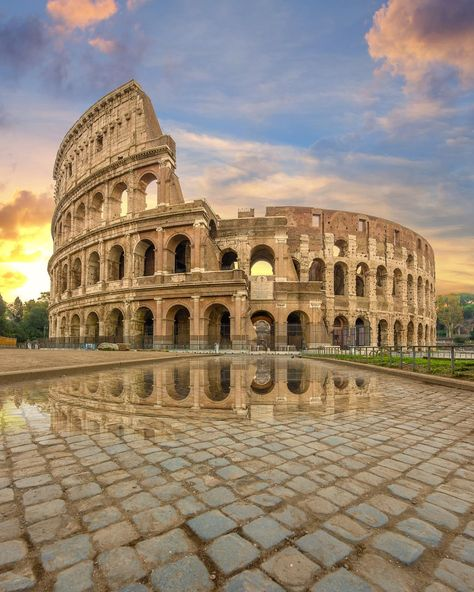

Paris, France
Bali, Indonesia
Grand Canyon, USA

Safari, Kenya
Tokyo, Japan
Rome, Italy
Dubai, UAE
Sydney, Australia
Cape Town, South Africa

Click on a destination to learn more!
Highlight: The Eiffel Tower and Seine River.
Best Time to Visit: Spring and Fall.
Fun Fact: Paris is known as the "City of Light" and "City of Love."
Highlight: Beautiful beaches and ancient temples.
Best Time to Visit: April to October.
Fun Fact: Bali has over 20,000 temples!
Highlight: Stunning red rock formations.
Best Time to Visit: March to May and September to November.
Fun Fact: The Grand Canyon is over 277 miles long!
Highlight: Wildlife and the Great Migration.
Best Time to Visit: June to October.
Fun Fact: Kenya is home to the "Big Five" animals.
Highlight: Vibrant city life and cherry blossoms.
Best Time to Visit: March to May and October to November.
Fun Fact: Tokyo is the most populous metropolitan area in the world.
Highlight: The Colosseum and Roman Forum.
Best Time to Visit: Spring and Fall.
Fun Fact: Rome is often called the "Eternal City."
Highlight: Burj Khalifa and Desert Safari.
Best Time to Visit: November to March.
Fun Fact: Dubai is home to the world's tallest building, the Burj Khalifa.
Highlight: Sydney Opera House and Harbour Bridge.
Best Time to Visit: September to November and March to May.
Fun Fact: Sydney is the largest city in Australia, not its capital!
Highlight: Table Mountain and Robben Island.
Best Time to Visit: March to May and September to November.
Fun Fact: Cape Town is also called the "Mother City."
Highlight: CN Tower and Toronto Islands.
Best Time to Visit: Late April to May and September to October.
Fun Fact: Toronto is one of the most multicultural cities in the world.
Highlight: The Acropolis and Parthenon.
Best Time to Visit: March to May and September to November.
Fun Fact: Athens is one of the oldest cities in the world, with a history spanning over 3,400 years.
Highlight: Christ the Redeemer and Copacabana Beach.
Best Time to Visit: December to March.
Fun Fact: Rio is famous for its Carnival, the largest festival in the world.